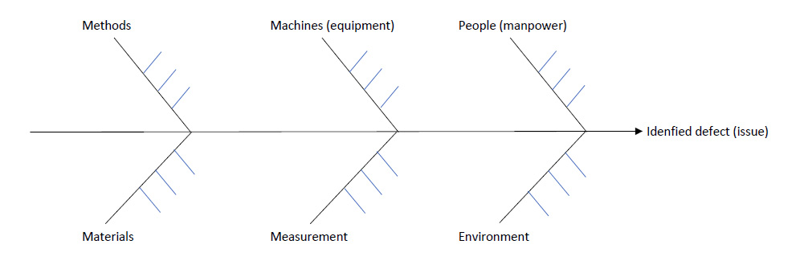

Six Sigma Process Management: Improve Phase

Improve is the fourth phase in the Six Sigma DMAIC cycle. The focus of this stage is to determine a solution which is based on the uncovered problem in the first three phases. In this phase we often try and identify key process input or output variables which impact our outcomes. A large part of the improve stage is doing cause and effect analysis to address problems in business processes.
Fishbone Diagram (Ishikawa Diagram or cause-and-effect diagram)
A fishbone diagram (also known as an Ishikawa diagram or cause and effect diagram) is an analysis tool that provides a systematic way of looking at causes and effects (or more accurately the causes that create or contribute to effects). It is used to identify potential causes of a problem by focusing on major categories. The design of the diagram looks much like the skeleton of a fish,w with the head being the problem or issue being addressed.
Below are the basic steps for creating a fishbone diagram:
- First, identify a problem and made it the "head" of the diagram.
- Brainstorm major categories that could be causes of the problem. Some standard categories used include:
- Methods
- Machines (equipment)
- People (manpower)
- Materials
- Measurement
- Environment
- Write the categories of causes as branches from the main arrow.
- Brainstorm all the possible causes of the problem. It helps to ask "Why does this happen?" It should be noted that causes can be written in several places if they relate to several categories.
- You can write sub-causes branching off the main causes as applicable.
- Continue to ask "why does this happen" to generate as many levels of causes as possible
Continue to ask "Why?" and generate deeper levels of causes. Layers of branches indicate causal relationships.
It should end up looking something like this:

Force Field Analysis
See Mind Tools Force Field Analysis
Failure Mode Effects Analysis [FMEA]
Failure mode and effects analysis (FMEA) is often the first step of a system reliability study. It involves reviewing as many components, assemblies, and subsystems as possible to identify failure modes, and their causes and effects.Failure Modes and Effects Analysis (FMEA) is a systematic, proactive method of evaluating a process. An FMEA identifies the opportunities for failure, or "failure modes," in each step of the process. Each failure mode gets a numeric score that quantifies (a) likelihood that the failure will occur, (b) likelihood that the failure will not be detected, and (c) the amount of harm or damage the failure mode may cause to a person or to equipment. The product of these three scores is the Risk Priority Number (RPN) for that failure mode. RPN is a measure used when assessing risk to help identify critical failure modes associated with your design or process. RPN values range from 1 (absolute best) to 1000 (absolute worst). It is calculated by multiplying the expected severity by the liklihood of occurance by the likelihoood of detection: Severity * Occurrence * Detection. The sum of the RPNs for the failure modes is the overall RPN for the process. As an organization works to improve a process, it can anticipate and compare the effects of proposed changes by calculating hypothetical RPNs of different scenarios. Just remember that the RPN is a measure for comparison within one process only; it is not a measure for comparing risk between processes or organizations.
A few different types of FMEA analyses exist, including functional, design, and process:
- Functional Failure Mode and Effect Analysis (FFMEA).
- Design Failure Mode and Effect Analysis (DFMEA). The application of the Failure Mode and Effects Analysis (FMEA) method specifically to product/service.
- Process Failure Mode Effects Analysis (PFMEA).
improvement plans
Improvement techniques that are available to help with process improvoment are many. Four that are commonly used are Kaizen, Kaizen blitz, plan-do-check-act, and cost benefit analysis.
Kaizen. Kaizen means continuous improvment. It's origins are from two Japanese words that translate as "good change" or "improvement". Kaizen practices involve teamwork, discipline, a focus on good morale, quality circles, and welcoming suggestions for improvement.
Kaizen blitz. While similar to Kaizen above, a Kaizen Blitz is short in duration. The improvment push may last for a week, for example. They are often completed with a specific goal in mind.
Plan-do-check-act (PDCA). Plan-do-check-act is a continuous improvement tool which focuses on a businesses's products or processes.The first stage is to answer the question, "what do we plan to do?". This is followed by performing what was planned adn then checking if those actions medt expectations. From there, at the act stage, the group addresses if there is a need for any changes and addresses where to go next. It is an iterative process. Sometimes it is also referred to as the Deming circle or the control circle.
Cost-benefit analysis. Cost benefit analysis is a method of comparing costs and benefits of an intervention of some sort where both are expressed in monetary units. Performing a cost benefit analysis necessitates determining which costs and benefits count, how they will be measured, and how the impacted will be predicted.
Analysis is vital in the improve phase because it ensures the areas that are being improved upon are the most likely to have a strong positive impact.
Analysis of Variance (ANOVA)
Analysis of variance (ANOVA) compares the effects of multiple levels of multiple factors. It entails a) determeining whether differences between group means are statisticially significant, b) examining the group means, c) comparing the group means, d) determining how well the model fits your data, and e) determining whether your model meets the assumptions of the analysis.
T-TeSt
A T-Test is used to determine if there is a significant difference between the means of two groups and tells you how significant those differences are.
Root Cause Analysis
Root cause analysis is is described in the Six Sigma Analyze phase, but is also used during this phase as well.
Five Whys
The five whys is described in the Six Sigma Analyze phase, but is also used during this phase as well.
Design of Experiments
Design of experiments is described in the Six Sigma Analyze phase, but is also used during this phase as well.